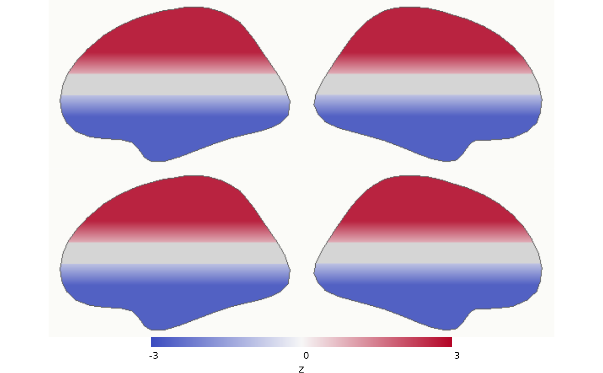

Static multi-view surface figure with a shared colour scale
Source:R/surface_figure.R
surface_figure.RdRenders one or both hemispheres from several canonical views with [render_surface_rgba()] and arranges the panels into a single figure with an optional colour bar. All panels share the same threshold, limits, and palette, so the figure carries one interpretable colour scale.
Usage
surface_figure(
lh = NULL,
rh = NULL,
values,
anatomy = NULL,
views = c("lateral", "medial"),
threshold = 0,
tail = c("two_sided", "positive", "negative"),
limits = NULL,
palette = c("#3B4CC0", "#F7F7F7", "#B40426"),
overlay_alpha = 0.85,
alpha_ramp = 0,
camera_mode = c("canonical", "presentation"),
cortex_mask = NULL,
legend = TRUE,
legend_title = NULL,
panel_width = 720,
panel_height = 450,
antialias = 2L,
...
)
# S3 method for class 'surface_figure'
plot(x, ...)
# S3 method for class 'surface_figure'
print(x, ...)Arguments
- lh, rh
[SurfaceGeometry] objects for the hemispheres to draw. Supply at least one.
- values
Vertex values. With both hemispheres, a named list with elements `lh`/`rh` (or `left`/`right`); with one hemisphere, a numeric vector or a one-element named list.
- anatomy
Optional anatomy metric (for example curvature from a matching white surface), in the same form as `values`.
- views
Character vector of camera views drawn for each hemisphere, from `"lateral"`, `"medial"`, `"dorsal"`, `"ventral"`. Views are rows of the figure; hemispheres are columns.
- threshold, tail, limits, palette, overlay_alpha, alpha_ramp, camera_mode
Shared rendering contract applied to every panel; see [render_surface_rgba()]. `limits` defaults to the finite range of `values` across hemispheres.
- cortex_mask
Optional cortex-domain mask, in the same form as `values`.
- legend
Draw a colour bar beneath the panels.
- legend_title
Text under the colour bar, typically the statistic and its units.
- panel_width, panel_height
Pixel dimensions of each rendered panel.
- antialias
Integer supersampling factor per panel.
- ...
Additional arguments passed to every [render_surface_rgba()] call.
- x
A `surface_figure` object.
Value
A `surface_figure` object: the rendered `surface_rgba` panels plus layout and colour-scale metadata. `plot()` draws it and invisibly returns it.
Details
This is the package's high-level entry point for a static, publication figure. It runs headlessly (CI, cluster, Quarto, PDF) and requires neither OpenGL nor a browser. `plot()` and `print()` draw the figure on the current graphics device; [write_surface_figure()] writes it to PNG.
See also
[render_surface_rgba()] for the single-panel contract, [write_surface_figure()] to write PNG output, and [surfwidget()] for the interactive HTML counterpart.
Examples
# \donttest{
fs <- load_fsaverage_std8("inflated")
#> loading /home/runner/work/_temp/Library/neurosurf/extdata/std.8_lh.inflated.asc
#> loading /home/runner/work/_temp/Library/neurosurf/extdata/std.8_rh.inflated.asc
stat <- lapply(fs[c("lh", "rh")], function(g) coords(g)[, 3] / 10)
fig <- surface_figure(
lh = fs$lh, rh = fs$rh,
values = stat,
threshold = 1, limits = c(-3, 3),
legend_title = "z",
panel_width = 300, panel_height = 200
)
plot(fig)

# }